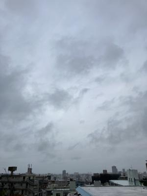
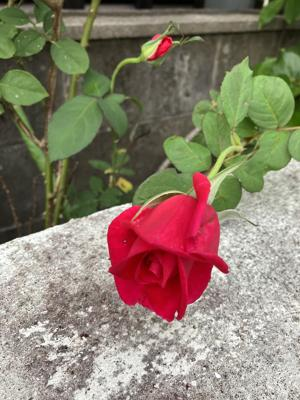

うるがいの話 ある日
最新: チビ猫の今【うるがいの話 ある日】とは 一日だけのプログです
『うるがいの話』の最新一日だけのプログで、通信料が少なく経済的だ。カニの画像をクリックすると全ての日付が載る『うるがいの話』サイトを表示します
|
|
【うるがいの話】 うるがい(ｳﾙｶﾞｲ urugai)とは、『もずくがに』の名前でとても大きくなります。 |
|---|---|
|
|
【カミマヤーの話】 猫のことを方言でマヤーといいます。カミマヤー（kamimayaa）とは、神の猫のことです。 |
|
【たながぁの音楽】 たながぁ（ﾀﾅｶﾞｰ tanagaa）とは手長えびのことで、何種類かあり大きいのは車 エビぐらいになります。 |

|
【ぶながぁの話】 ぶながぁ(ﾌﾞﾅｶﾞｰ bunagaa)とは、赤い髪の毛、赤い身体、そして身長は１ｍ２０ｃｍ ぐらい、川の蟹を食べているの目撃された。場所は沖縄県国頭郡大宜味村のと ある村僕の隣近所に住んでいる爺さんから、聞いた話です。 |
|
|
【ギーマの話】 ギーマ(giima)とは、山原の里山に咲くスズランに似た、 花を付けます。実は食べられます、 気が付くと口の周りが紫になっています。 |
2023年12月05日 (火）チビ猫の今
15:00

先週の土曜日、ヨメはお隣の奥さんを車に乗せて動物病院へ行き、チビ猫と面
会する。状況は良くて早く退院できると獣医に言われた。ただし、獣医の左手
に包帯がしていた。大型の犬にかまれたとの事だが、隣の奥さんの左手を骨折
した箇所が、全く同じなので奥さんは気にした。チビ猫は、ユタにこの猫は大
事にしないといけない、ちゃんと世話をしなさいと言われているとヨメに話て
いる。ヨメは、薄気味悪いと言っている。今日は、オス猫であるチビ猫の避妊
手術（５万円、ハブにかまれる前から動物病院と相談していたらしい）が行わ
れた日である。奥さんは、ヨメに動物病院へ連れていってもらいたかったが、
ヨメは用事があるのでと断っていた。ヨメが、用事から戻ると奥さんが、旦那
さんに連れていってもらったと、奥さんは旦那さんに内緒だったのでかなり怒
られ、明日退院させて！と言われ、ヨメは明日の夕方、動物病院へ連れていっ
てと頼まれる。イヤハヤ、ところで今読んでいるラダーシリーズの英語の本は
獣医の物語：ヘリオット先生奮戦記 If Only They Could Talk
その前が
猫の物語：The Double Life of a Very Black Cat
フムフム、シンクロしている。ヨメには、このことは言わない。

１５時３３分 ビットコインの総資産 ￥１７、８７５（↑１９６）